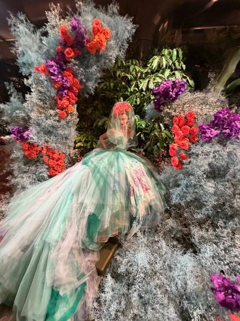

For Chantal Leduc, a French-Canadian fashion stylist and former international model, the most valuable moments of Fashion Week rarely happen in the photographs. They happen in the quiet seconds when a gown passes close enough to reveal its stitching, and an idea about style suddenly becomes clear.
Chantal Leduc has been a regular presence at Women’s Fashion Week in Milan and Paris for years, and each season she returns with far more than images for Instagram. She comes home with a sharper sense of what makes clothing feel timeless rather than merely new. The lessons are rarely about a specific trend. They are about proportion, intention, and the confidence to wear something beautifully.
Craftsmanship is the real headline
Couture is the one place where fashion truly slows down. A single bodice might be embroidered, pleated, or sculpted by hand over hundreds of hours, and standing close to that work changes how you look at everything else in your wardrobe. Up close, the finest pieces often feel quiet, even when they read as dramatic from across the room. The seams lie flat, the fabric moves with the body, and nothing looks forced.
That standard translates directly into everyday dressing. A well-cut jacket, a dress in an honest fabric, a hem at exactly the right length: these are the details that separate an outfit from a look. For a stylist, the front row is a masterclass in seeing those details first, and in learning to recognize quality long before a label is visible.

Milan and Paris speak different languages
Milan tends to celebrate color, texture, and bold Italian glamour, with shows that can feel like theater: floral installations, sculpted silhouettes, and gowns that turn a runway into a garden. Paris, particularly during the couture presentations, often speaks in a more hushed register, where the emphasis falls on technique, heritage, and the long relationship between a house and its ateliers.
Moving between the two cities keeps Leduc’s eye balanced. From Milan she takes a love of joyful color and fearless volume; from Paris, a reverence for restraint and precision. Personal style lives somewhere between those poles, and the most elegant women tend to borrow a little from both.
Taking the runway home
Runway fashion is not meant to be copied piece by piece. The value lies in translating an idea into something wearable. A dramatic floral bodice might become a single statement earring; a cloud of tulle might suggest a softer silhouette for evening. Chantal approaches each collection by asking what feeling it creates, and how that feeling might live in a real wardrobe.
It is an approach shaped by her years as an international model, when she wore the work of countless designers and learned how clothes behave on a moving body. That experience still informs how she edits, pairs, and styles today, and it is why she values fit and movement as highly as any print or embellishment.
Conclusion
Fashion Week is spectacle, but it is also an education for anyone willing to look closely. For Chantal Leduc, each season in Milan and Paris renews a simple conviction: style is less about owning the newest pieces than about understanding why certain pieces endure. It is the foundation of the principles of lasting elegance she brings to every styling decision, and a reminder that beauty is always worth a closer look.
Related Reading